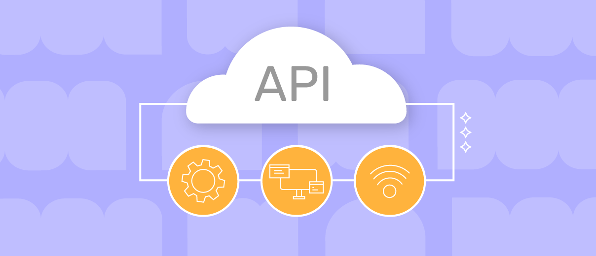

LINKS ÚTEIS (PARA AGILIZAR PROCESSOS)
API NA AWS
SUMÁRIO
PRÉ REQUISITOS
Como estamos falando de uma plataforma de vários serviços, é necessário que tenhamos alguns pré conhecimentos antes de fato começarmos a trabalhar com a API:
-
Conhecimento básico de TI no geral , fundamental para que não se perca durante a execução das etapas e na identificação de alguns termos de hardware, software e redes.
-
Crucial ter conhecimentos das ferramentas da AWS, principalmente para esse exercício: EC2
Tendo todas as coisas listadas acima vamos para o começo de um projeto!